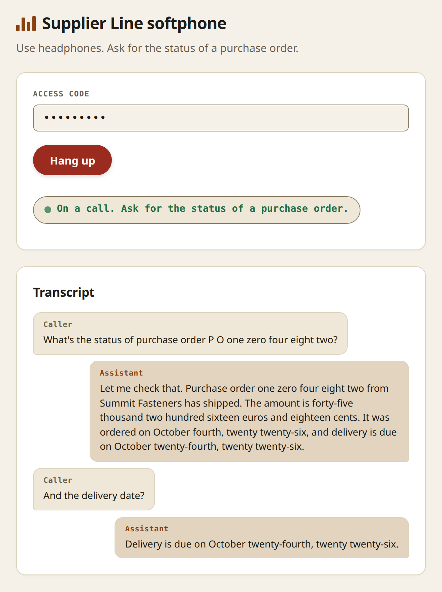
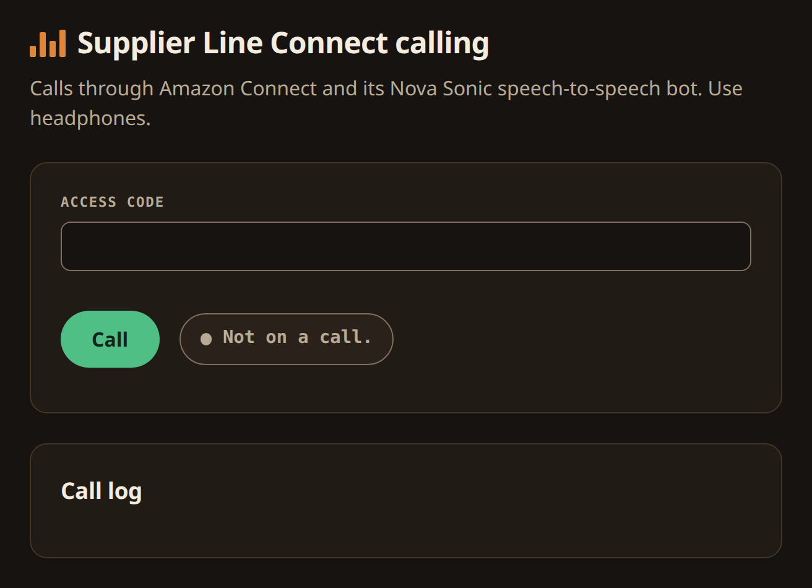
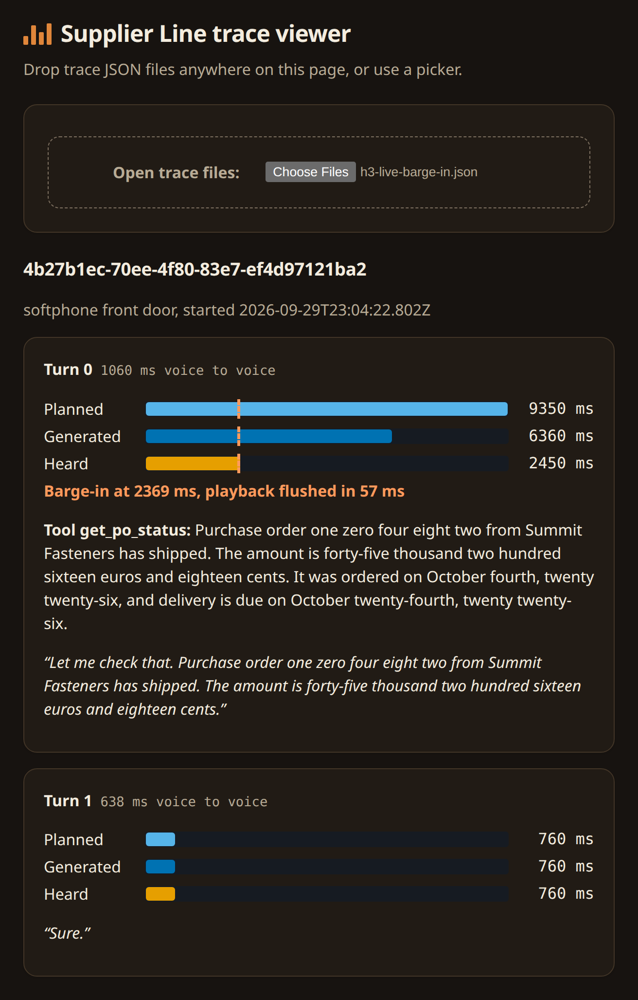

Inside a real-time AI voice agent: what each part of Supplier Line does
A speech-to-speech model will read out an order it misheard, answer from memory, or go quiet after a lookup. Supplier Line, a voice agent on Amazon Nova 2 Sonic that answers purchase-order status from a browser or an Amazon Connect call, prevents all three with a few small components you can reuse. In its live test on AWS, a check digit caught a misheard code before it could read out the wrong order. A spoken interruption stopped playback in 57 milliseconds. A call moved past Sonic's eight-minute connection limit with a 1-millisecond gap and no lost caller audio. And every call left a trace of what the caller actually heard, which automated checks re-read on every push. This post walks through one call and names the component behind each of those results.
The code is on GitHub. How it was built, by an orchestrator running AI agents, is the other post. The numbers below come from the app's first successful real deploy, a smoke test that replayed six recorded calls against the running app on AWS.
A call, end to end
The caller opens the softphone, enters the access code and presses Call. From then on, three parts cooperate:
- The browser captures the microphone as 16 kHz audio in an AudioWorklet and plays the agent's 24 kHz voice through a second one, reporting several times a second how much it has actually played.
- The session host, a small Node service, holds one WebSocket per call and one bidirectional stream to Nova 2 Sonic. It relays audio both ways, answers Sonic's tool calls, and records what happened.
- Nova 2 Sonic listens, decides when the caller has finished, calls the lookup tool, and speaks.
![Diagram of the session host during one call. The softphone's capture worklet sends 16 kHz caller audio over a WebSocket; the host sends back agent audio, turn markers, flush messages and transcript. Inside the host: the WebSocket server with access code and limits, the Sonic session with reading hold, answer guard, speak nudge and failure behaviours, the rotator with current and next connections, the response tracker, turns and ledger, and history for the next connection. The host talks to Nova 2 Sonic, calls get_po_status, and writes traces.](supplier-line-session-host.svg)

A typical exchange sounds like this:
"What's the status of purchase order P O one zero four eight two?" — "Let me check that. Purchase order one zero four eight two from Summit Fasteners has shipped. The amount is forty-five thousand two hundred sixteen euros and eighteen cents. It was ordered on October fourth, twenty twenty-six, and delivery is due on October twenty-fourth, twenty twenty-six."
Across the 20 lookup turns in the live test, Sonic started speaking a median 1.5 seconds after the caller's last words. When it takes longer than that, the host fills the gap with a recorded "One moment." (more on that below); in the live test that happened on 10 of the 20, all in the long call that rotated connections.
Getting the code right
Purchase-order codes are the hardest part of the call. People read them in groups, with pauses ("P O one ... zero four ... eight two"), and a speech model can decide the caller has finished at the first pause. Three components keep that from producing a wrong answer.
- A check digit in every code (
packages/tools/src/data/po-code.ts). The last digit is computed from a weighted sum of the other four, so any single wrong digit makes the code invalid. A misheard code never reads out another order. In the live test's long call, one request was heard as PO-13345, and the caller heard "Sorry, purchase order one three three four five doesn't look like a valid purchase order code. Could you say it again, one digit at a time?" - The reading hold (
packages/host/src/sonic/reading.ts). If Sonic calls the lookup before the caller has said all five digits, the host holds the call. When the rest of the code arrives, it tells Sonic the caller is still reading, and Sonic calls again with the whole code. In testing it caught early calls such as PO-10400, and the lookup ran as PO-10482 about half a second after the last digit. - A strict tool schema (
packages/tools/src/po-status). The lookup accepts onlyPO-followed by exactly five digits. The agent itself never says "dash" or gives an example code, because Nova 2 Sonic readily repeats phrases from its prompt, and callers echo the agent's wording.
Speaking only what the lookup returned
The lookup returns data and a finished sentence, its rendering. The system prompt tells Sonic to speak that rendering exactly, and three components make sure it did.
- The renderings (
packages/tools/src/render,packages/tools/src/po-status/render.ts) turn amounts, dates and codes into speech: integer cents become "forty-five thousand two hundred sixteen euros and eighteen cents", codes are read digit by digit, and each order has a due date plus, when it is late, the new expected date. - The answer guard (
packages/host/src/sonic/answer-guard.ts). If Sonic starts speaking order details in a turn with no lookup, from memory of an earlier answer, the host stops that audio before the caller hears it and tells Sonic to look the order up. - The speak nudge (
packages/host/src/sonic/speak-nudge.ts). Occasionally Sonic receives a result and never speaks it. If a result stays unspoken for three seconds, the host sends Sonic a text message asking it to speak the result now, using Nova 2 Sonic's cross-modal input.
The same rule appears in the traces as a check: any turn that speaks order data without a lookup result fails.
A conversation, not a menu
Interruptions. Sonic detects when the caller talks over it and signals the host, which tells the browser to drop the audio it has queued. In the live test, "Wait, stop" 2.4 seconds into an answer stopped playback within 57 milliseconds, and the agent replied "Sure." The host waits until Sonic is ready before accepting caller audio, because a backlog of queued audio can make Sonic believe its answer has already finished, and then it sends no interruption signal at all.
Silence. If no agent audio has started 1.5 seconds after the caller finishes (packages/host/src/sonic/filler-timer.ts), the caller hears "One moment." once. If the lookup itself takes more than three seconds (packages/host/src/sonic/tool-timeout.ts), they hear "Still checking, one moment.", the host retries once, and it discards a late first answer. If Sonic cannot be reached at all, the caller hears "Sorry, this line can't take your call right now. Please try again shortly." These phrases were recorded from Sonic itself in the same voice, Matthew, so they sound like the agent and are ready to play instantly.
Calls longer than eight minutes
A Nova 2 Sonic connection lasts at most eight minutes, and the app allows fifteen-minute calls. The rotator (packages/host/src/sonic/rotator.ts) follows AWS's session-continuation pattern: after six minutes, once the agent starts speaking, it opens a second connection in the background, keeps the last three seconds of caller audio, replays the conversation into the new connection and switches over.
Two details make it work in practice. The replayed history uses what the caller heard, taken from the playback ledger, not what Sonic generated, so an interrupted answer is not remembered as complete. And the new connection is told which order the lookup found last, so a follow-up such as "and the delivery date?" still leads to a lookup instead of a guess. In the live test, the rotation happened 381 seconds into the call with a 1 millisecond gap, and all 7.4 seconds of caller audio received during the handover reached Sonic.
Two front doors
The softphone is a single page with the access code, a Call button, a status line and the transcript. The Connect calling page asks the host to start an Amazon Connect call (StartWebRTCContact) and joins it with the Amazon Chime SDK. On that path Connect runs its own contact flow and a Lex bot whose speech model is set to Nova 2 Sonic speech-to-speech, with the same voice. The bot calls the same lookup code as the host, through a Lambda function, so both doors give the same answer in the same words.

Working within Amazon Connect
Connect gives you a managed voice channel on its own terms. Four of them shaped the design, and each has a clear answer.
- Connect runs the conversation. With Nova Sonic as its speech model, Connect still routes every turn through its contact flow and Lex intents, so Sonic can't call tools the way it does in the host. Supplier Line models the lookup as one intent whose slot accepts exactly five digits, fulfilled by a Lambda that wraps the host's lookup and rendering code. The check digit and the exact wording carry over unchanged.
- Part of the setup lives outside infrastructure as code. Switching the bot to Nova Sonic speech-to-speech is a setting in the Connect admin website, and redeploying the bot resets it. So Connect lives in the persistent stack, which is never torn down, and the few manual steps are a short written checklist. The app stack comes and goes with every demo window without touching them.
- One voice everywhere. Connect offers four Nova Sonic voices. Choosing Matthew for both front doors means callers hear the same agent whichever way they come in.
- Least privilege, within Connect's limits. Starting a browser call needs
StartWebRTCContacton a contact flow. The flow's IDs live in the persistent stack, and CDK's deploy role can't read them at deploy time. So the host's role gets the action on this account's contact flows only, and a template test locks that grant in.
With no phone number, the Connect calling page is the bridge. It takes the same access code as the softphone, asks the host to start the contact, and joins it with the Chime SDK, so a browser reaches a real Connect contact flow.
Seeing what the caller heard
Every call writes a trace: one JSON file per session, in S3 when deployed. Each turn records how much audio Sonic planned, how much it generated and how much the browser actually played, plus latency, barge-in time, fillers and connection rotations. Six automated checks read every trace: the caller never heard more than was generated, a barge-in stopped playback quickly, a lookup's rendering was spoken in full, no order data was spoken without a lookup, silence never lasted too long, and a rotation lost no caller audio. The traces from the live test are committed to the repo, so these checks run against real deployed behaviour on every push.

The trace viewer draws those three bars side by side for each turn. It made one bug easy to see: a trace once showed a garbled answer, but a recording of what the caller heard was perfect, and the fault turned out to be in how the trace matched Sonic's sentence confirmations, not in the call.
Built for everyone
All three pages meet WCAG 2.2 Level AA: text contrast of at least 4.5:1 and 3:1 for controls and chart bars in both light and dark schemes, a visible focus ring that is never hidden, targets of at least 24 pixels, layouts that reflow down to 320 pixels, call state announced to screen readers through a live region, and nothing conveyed by colour alone. An axe check runs on every push against each page, idle and in a simulated call.


Safe to run in the open

- An access code guards both the WebSocket and the Connect endpoint, checked before any model call. Softphone calls last at most fifteen minutes, with a spoken one-minute warning, and at most two run at once.
- The app exists only while I say so. The web-facing stack, CloudFront, a load balancer and one ARM64 Fargate task, deploys only through a GitHub workflow I approve, for one to eight hours.
- A reaper Lambda checks every ten minutes and deletes the stack when its window expires, with email alerts, an alarm if it fails, and a heartbeat alarm if it stops running.
- The rest costs almost nothing idle. The persistent stack holds the container registry, the traces bucket, the Connect instance and the reaper, with no hourly charges.
What is not built
The app speaks English only. Barge-in is detected by the model, not by the browser. There is no phone number, no login beyond the access code, and no reasoning model behind the lookup. These were deliberate cuts for a short build, and each is written down in the repository's decision records.